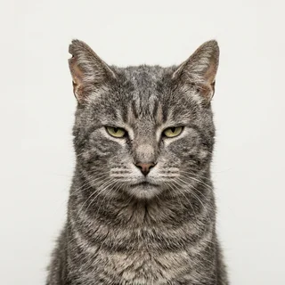
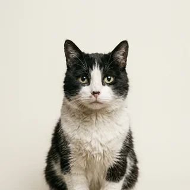

Zero-Approach Dispatch
Drivers park at a certified distance, cut the engine, and look at nothing. Onboard sensors log each inch of rider approach as pipeline progress. Most rides close within nine business days.
MEDIAN CLOSE: 9 BUSINESS DAYS
Slink dispatches calm, stationary vehicles to feral cats across 14 metro alley networks. Boarding is voluntary, unscheduled, and statistically rare. We consider this a property of the market, not a flaw in the product.
Request a pickup anywayDrivers park at a certified distance, cut the engine, and look at nothing. Onboard sensors log each inch of rider approach as pipeline progress. Most rides close within nine business days.
Traditional ETAs measure distance. Ours measures willingness. The arrival estimate updates hourly as the rider's confidence rises, collapses, and rises again slightly less than before.
Our route graph maps 40,000 food sources, porch gaps, and warm transformer boxes. Destinations on the Slink network do not need an address. They need a smell.
Watch a certified driver hold a curb while a rider considers her options from beneath a Buick. Protocol toggles included. Outcomes not guaranteed, or expected.
open the demo →
“The car idled outside the laundromat for six days. On the seventh day I got in. I regret nothing and I will never do it again.”
Gravel
Senior Territorial Manager, Rear Lot of the Linden Street Arby's

“I have completed 214 rides, if you count watching the vehicle from under a Buick as riding. Slink counts it, which I respect.”
Yowl
Regional Director of Hissing, Pier 4 Bait Shop Colony
“Eleven boardings in four thousand attempts. Five stars every time. They never rate me back.”
Marcus Tran
Platinum Slink Driver, 11 Completed Rides Since March
$4 / attempted pickup
For the rider who owes you nothing.
$89 / mo
Pooled mobility for up to 30 cats who hate each other.
$1,400 / mo
A vehicle that idles so you never have to decide.
ALL FARES BILLED REGARDLESS OF BOARDING. BOARDING IS A RIDER DECISION AND OUTSIDE THE SCOPE OF THIS AGREEMENT.